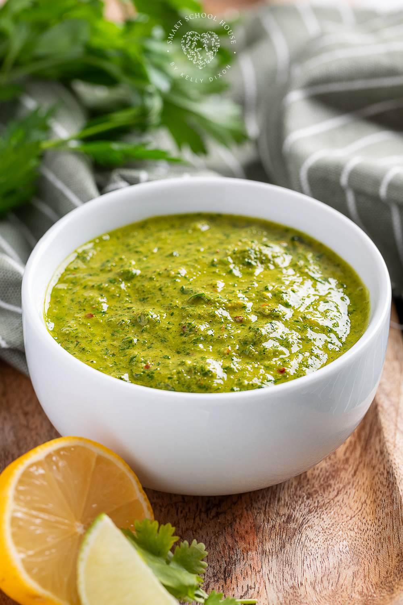

Home
Chimichurri

Description
A vibrant Argentine sauce made with herbs, garlic, and vinegar, perfect
for drizzling over grilled meats.
Ingredients
- Fresh parsley
- Fresh cilantro
- Garlic
- Vinegar
- Olive oil
Steps
- Finely chop the parsley and cilantro.
- Mince the garlic and add it to a bowl.
- Add the chopped herbs to the bowl with the garlic.
- Whisk in the vinegar and olive oil until well combined.
- Serve immediately or store in the refrigerator for later use.